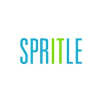
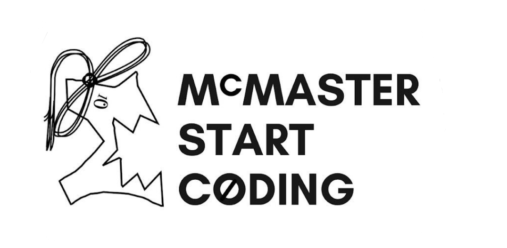

Experience
CLICK ON A CATEGORY BELOW TO NAVIGATE TO THAT SECTION
Parker Hannifin

Digital & IT Intern
Developed and maintained Power BI dashboards, reports, and visualizations for freight, inventory, workforce, and Sales & Operations Planning across five value streams, translating operational data into decision-ready business insights.
Used SQL, Excel, and Power BI to extract, transform, analyze, and visualize operational data, developing KPIs, filters, and comparative views to support data-driven decision-making for cross-functional stakeholders.
Investigated data sources underlying existing reporting applications by tracing ASP.NET pages to SQL tables and views, identifying data and tracking gaps, and supporting creation of new data structures to improve data coverage and reporting reliability.
Standardized and validated data across multiple sources with inconsistent date formats and vendor naming conventions, improving data quality, consistency, and reliability for downstream reporting and analysis
Identified and automated recurring reporting processes using Power Automate/RPA, integrating SQL queries, Excel, web applications, email, and Power BI to generate approximately $12.6K in annual soft savings; documented process steps, requirements, variables, and access dependencies to support adoption and ongoing maintenance
Partnered with Supply Chain, Operations, Finance, LEAN, and Quality stakeholders to understand business needs, gather requirements, identify process improvement and automation opportunities, analyze data, and communicate technical solutions in clear, business-focused term.
Developed a database-driven ASP.NET web application for tracking and visualizing employee safety performance using C# and SQL. Designed the application’s entity relationship diagram (ERD) and implemented database functionality to calculate and display employee safety scores.
Spritle Software
Software Developer & Project Manager Intern
Developed and tested a Python-based speech-to-text solution for Changi Airport’s Fault Management Center using approximately 100 historical audio recordings; conducted R&D and comparative testing of OpenAI Whisper against AWS Transcribe, evaluating transcription results and opportunities to improve automated ticket creation, and recommending Whisper to the team after achieving improved performance and multilingual recognition.
Transitioned into a Project Manager role, gathering and managing stakeholder requirements, participating in Changi Airport meetings, and translating client feedback, concerns, and operational needs into actionable development priorities.
Coordinated daily stand-ups, project timelines, and cross-functional testing with development and quality assurance teams, supporting end-to-end delivery from requirements through testing and deployment.
Contributed to an AI-enabled ticketing solution integrating speech-to-text, language identification, translation, and automated ticket classification, improving transcription accuracy from 70% to 95% and reducing manual ticket creation by 50%.
McMaster University
Start Coding Camp

Volunteer
Designed educational illustrations: Created engaging Elm-based visuals for a children's reading game, incorporating Picasso-style elements to enhance learning. Gained exposure and improved skills in front-end development, Elm programming, problem solving, and creative thinking.
Reviewed UI Toolkits thesis: Provided constructive feedback on thesis work under the supervision of Dr. Christopher Anand, improving attention to detail and collaboration skills.